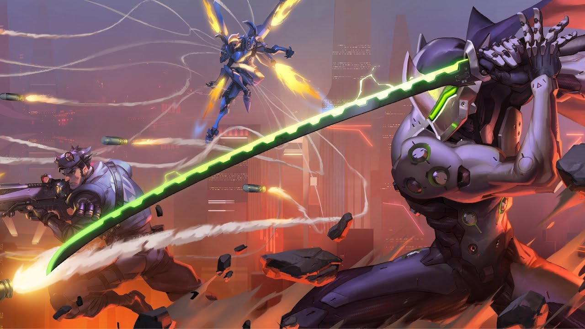

Web ini adalah tempat share informasi game seru yang
dapat di download gratis untuk menemani karantina di rumah
bagi para gamers
Toggle Dark/Light Mode
Click the button to toggle between dark and light mode for this page.
Overwatch

Hal yang benar-benar baru dari Overwatch 2 adalah adanya mode story mission yang bisa dimainkan sendiri atau bersama tiga pemain lain (co-op). Selebihnya,
Overwatch 2 juga menghadirkan engine baru, mode PvP baru dan sejumlah map beserta hero baru. Kecuali story mission, fitur lainnya ini rupanya juga bakal
merambah Overwatch pertama. .....
Berdasarkan wawancara Kotaku dengan petinggi tim Overwatch, Jeff Kaplan, Blizzard memang punya rencana jangka panjang untuk menyatukan Overwatch 1 dan Overwatch 2.
Mungkin tidak langsung pada saat Overwatch 2 diluncurkan, akan tetapi Jeff bilang bahwa nantinya game client Overwatch 1 dan Overwatch 2 bakal mereka gabungkan menjadi satu.
Overwatch memadukan first person shooter dengan gaya permainan objektif yang biasa ditemui pada game bergenre MOBA/ARTS seperti Dota 2. Dalam Overwatch, tujuan bermainmu bukanlah untuk
membasmi semua musuh, tapi menjalankan misi/objektif tertentu. Membunuh musuh hanya salah satu jalan mencapai misi tersebut dan bukan jaminan untuk memenangkan game.
Pada dasarnya misi dalam Overwatch hanya terbagi menjadi dua jenis, yaitu Attack dan Defense, namun terdapat variasi dengan kebutuhan taktik berbeda-beda. Misalnya, misi Defense di
control point akan berbeda dengan misi Defense untuk melindungi payload (kendaraan bermuatan) yang sedang berjalan. Ada juga misi yang mengharuskan kedua tim sama-sama melakukan Attack dan memperebutkan satu control point di tengah arena.
Dota 2
Dota 2 adalah sebuah permainan Arena pertarungan daring multipemain, dan merupakan sekuel dari
Defense of the Ancients mod pada Warcraft 3: Reign of Chaos dan Warcraft 3: The Frozen Throne.
DotA 2 dikembangkan oleh Valve Corporation, terbit juli 2013 dota 2 dapat dimainkan secara gratis
pada sistem operasi Microsoft Windows, OS X and Linux. Dota 2 dapat dimainkan secara eksklusif melalui distributor resmi valve, Steam.
.....
Dota 2 dimainkan oleh 2 tim yang beranggota 5 orang pemain, setiap tim memiliki markas yang berada dipojok peta, setiap markas memiliki
satu bangunan bernama "Ancient", Di mana tim harus berusaha menghancurkan "Ancient" tim lawan agar dapat memenangkan pertandingan.
Setiap pemain hanya dapat mengontrol satu karakter "Hero" yang berfokus pada menaikan level, mengumpulkan gold, membeli item dan melawan tim lawan untuk menang.
Perjalanan akuisisi Valve atas nama DOTA memang bukan perkara mudah. Sempat mengalami konflik dengan Blizzard sebagai pemilik Warcraft III, perseteruan ini untungnya
berakhir damai. Valve berkesempatan untuk terus melanjutkan terus proyek ambisius ini, menawarkan berbagai modifikasi di sisi visual dan tentu saja mekanik gameplay
yang lebih seimbang. Memasuki proses beta dan berhasil menjaring ratusan ribu gamer selama proses ini, Valve akhirnya siap untuk keluar dari fase yang satu ini.
Setahun sejak rilis betanya, Valve akhirnya secara resmi merilis DOTA 2 secara bebas kepada publik. Sembari memastikan proses peralihan ini tidak akan mengganggu
pengalaman mereka yang sudah masuk ke dalam masa beta, DOTA 2 akhirnya terbuka bagi setiap gamer lewat sistem F2P yang ia usung.
Mengingat masa beta yang sudah berakhir dan eksistensinya sebagai sebuah game resmi yang terbuka secara komersil, ini menjadi momen yang tepat bagi JagatPlay
untuk melemparkan beberapa impresi yang sempat kami tangkap, tentu saja – selama setahun terakhir ini. Apa saja yang berubah? Menjadi lebih baik atau lebih buruk?
Atau ia masih belum mampu menundukkan popularitas DOTA pertama?
PUBG
PUBG adalah singkatan dari Player Unknown's Battlegrounds, yang merupakan sebuah permainan dengan genre battle royale. Permainan ini bisa
dimainkan dengan 100 orang sekaligus secara daring. 100 orang tersebut akan berusaha bertahan hidup dengan saling membunuh di suatu pulau.
PUBG ini sendiri dipercayai bahwa konsepnya terinspirasi dari novel Jepang berjudul Battle Royale yang dirilis pada tahun 1999. Novel ini juga sempat dijadikan
manga dan film yang rilis di tahun 2000 dan meraih kesuksesan luar biasa......
Hanya boleh satu orang yang bertahan hidup. Setiap siswa dibekali oleh air, obat, peta, kompas dan senjata acak. Selain novel Battle Royale ini,
novel The Hunger Games yang terbit tahun 2008 juga menggunakan konsep yang sama. The Hunger Games juga menjadi film Hollywood terkenal yang dibintangi
oleh Jennifer Lawrence. Maka pelan tapi pasti, game yang juga sering disebut sebagai 'PUBG' ini pun muncul sebagai raja baru di portal distribusi digital milik Valve – Steam.
Mulai dari berhasil menarik perhatian puluhan juta gamer hingga menundukkan game sekelas DOTA 2 dan CS: GO sebagai game dengan angka pemain bersamaan tertinggi dengan perbedaan
yang cukup tajam. Satu hal yang pantas untuk diacungi jempol adalah komitmen sang developer – Bluehole Studio untuk memastikan momentum ini tidak berhenti dan berakhir kegagalan,
seperti banyak game Early Access di masa lalu yang juga sempat melewati fase yang sama. Bekerja keras dengan menyempurnakan ragam fitur dan menyuntikkan peta baru untuk dinikmati,
PUBG akhirnya secara resmi lepas dari masa beta beberapa hari yang lalu. Lewat sebuah update “raksasa” berukuran 12 GB, ia akhirnya masuk versi final. Versi sama yang akhirnya membuat kami,
JagatPlay, akhirnya bisa membicarakan game yang satu ini.
Maka, inilah PUBG, sebuah game multiplayer kompetitif, yang bisa dimainkan solo ataupun berkelompok, dimana Anda harus berjuang untuk bertahan hidup selama mungkin di dalam arena.
Keacakan memang masih jadi sesuatu yang memainkan peran penting di sini karena Anda bisa berakhir beruntung mendapatkan rangkaian senjata dan equipment esensial ketika Anda jatuh pertama kalinya,
atau berakhir sial dan tak menemukan apapun, membuat Anda tak ubahnya mangsa yang menunggu untuk diterkam. Namun kelugasan gameplay tanpa omong kosong yang ditawarkan PUBG adalah salah satu kekuatan utamanya.